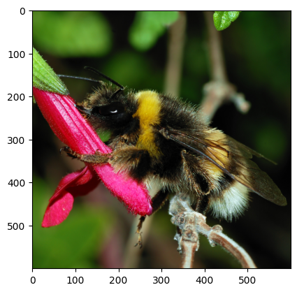
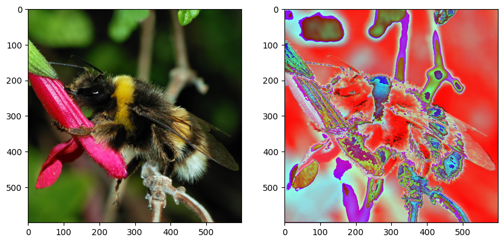
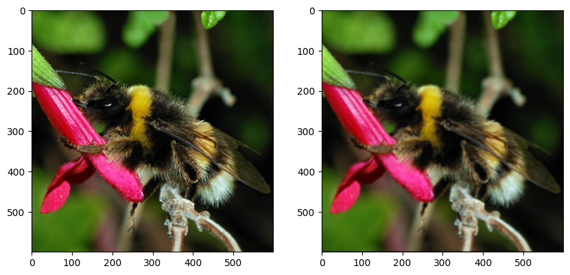
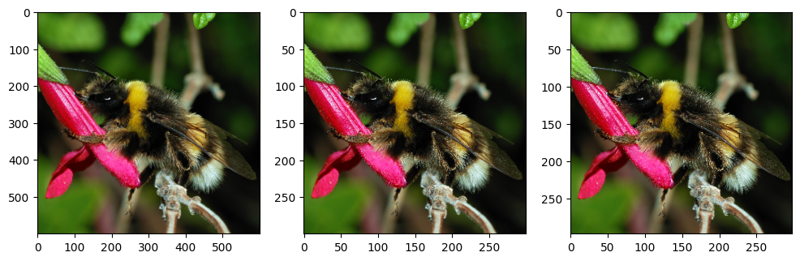
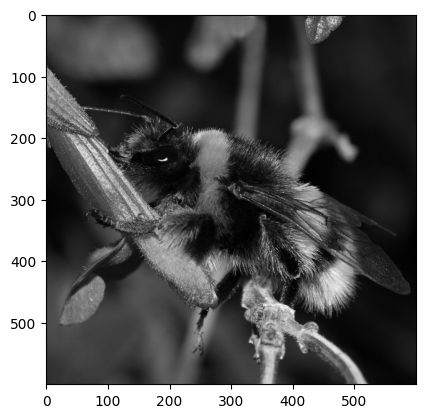
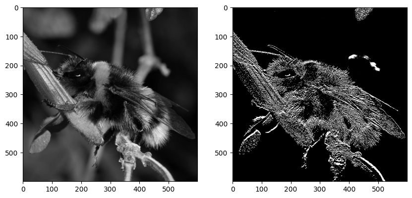
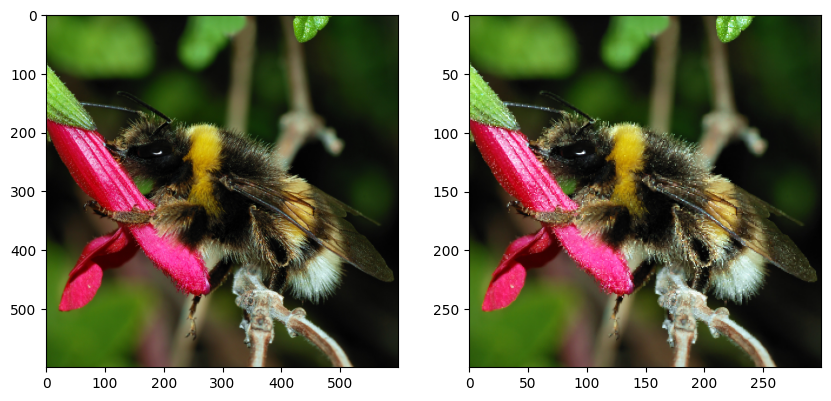
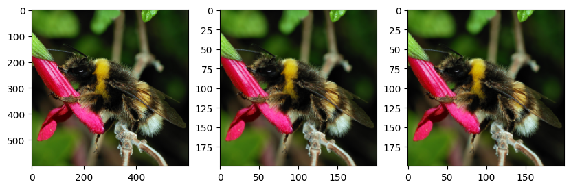

%matplotlib inline
import matplotlib.pyplot as plt
import numpy as np
from skimage.io import imread
from skimage.transform import resizeConvolución en Keras
Este notebook muestra la aplicación de convoluciones en imágenes.
Lectura y apertura de imágenes
El siguiente código permite leer una imagen, cargarla en un arreglo de numpy y mostrarla.
sample_image = imread("bee.png").astype("float32")
print("sample image shape: ", sample_image.shape)
size = sample_image.shape
plt.imshow(sample_image.astype('uint8'));sample image shape: (600, 600, 3)
Filtro de convolución
El objetivo de esta sección es utilizar TensorFlow / Keras para realizar convoluciones individuales sobre imágenes. En esta sección todavía no se entrena ningún modelo.
import tensorflow as tf
print(tf.__version__)2.16.2from tensorflow.keras.models import Sequential
from tensorflow.keras.layers import Conv2Dconv = Conv2D(filters=3, kernel_size=(5, 5), padding="same")sample_image.shape(600, 600, 3)img_in = np.expand_dims(sample_image, 0)
img_in.shape(1, 600, 600, 3)Si aplicamos esta convolución a esta imagen, ¿cuál será la forma del mapa de características generado?
Pistas:
- En Keras
padding="same"significa que las convoluciones usan el relleno necesario para preservar la dimensión espacial de las imágenes o mapas de entrada.
- En Keras, las convoluciones no tienen strides por defecto.
- ¿Cuánto padding debe usar Keras en este caso particular para preservar las dimensiones espaciales?
img_out = conv(img_in)
print(type(img_out), img_out.shape)<class 'tensorflow.python.framework.ops.EagerTensor'> (1, 600, 600, 3)La salida puede convertirse a un arreglo de numpy
np_img_out = img_out[0].numpy()
print(type(np_img_out))<class 'numpy.ndarray'>fig, (ax0, ax1) = plt.subplots(ncols=2, figsize=(10, 5))
ax0.imshow(sample_image.astype('uint8'))
ax1.imshow(np_img_out.astype('uint8'));
La salida tiene 3 canales, por lo tanto, también puede interpretarse como una imagen RGB con matplotlib. Sin embargo, es el resultado de un filtro convolucional aleatorio aplicado a la imagen original.
Veamos los parámetros:
conv.count_params()228Pregunta: ¿Puedes calcular el número de parámetros entrenables a partir de los hiperparámetros de la capa?
Pistas:
- la imagen de entrada tiene 3 colores y un único kernel de convolución mezcla información de los tres canales de entrada para calcular su salida;
- una capa convolucional genera muchos canales de salida a la vez: cada canal es el resultado de una operación de convolución distinta (también llamada unidad) de la capa;
- No olvidar los sesgos/biases
len(conv.get_weights())2weights = conv.get_weights()[0]
weights.shape(5, 5, 3, 3)Cada uno de los 3 canales de salida es generado por un kernel de convolución distinto.
Cada kernel tiene dimensión 5x5 y opera sobre los 3 canales de entrada.
biases = conv.get_weights()[1]
biases.shape(3,)Un bias por canal de salida.
Podemos construir un kernel nosotros mismos (“manualmente”).
def my_init(shape=(5, 5, 3, 3), dtype=None):
array = np.zeros(shape=shape, dtype="float32")
array[:, :, 0, 0] = 1 / 25
array[:, :, 1, 1] = 1 / 25
array[:, :, 2, 2] = 1 / 25
return arraynp.transpose(my_init(), (2, 3, 0, 1))array([[[[0.04, 0.04, 0.04, 0.04, 0.04],
[0.04, 0.04, 0.04, 0.04, 0.04],
[0.04, 0.04, 0.04, 0.04, 0.04],
[0.04, 0.04, 0.04, 0.04, 0.04],
[0.04, 0.04, 0.04, 0.04, 0.04]],
[[0. , 0. , 0. , 0. , 0. ],
[0. , 0. , 0. , 0. , 0. ],
[0. , 0. , 0. , 0. , 0. ],
[0. , 0. , 0. , 0. , 0. ],
[0. , 0. , 0. , 0. , 0. ]],
[[0. , 0. , 0. , 0. , 0. ],
[0. , 0. , 0. , 0. , 0. ],
[0. , 0. , 0. , 0. , 0. ],
[0. , 0. , 0. , 0. , 0. ],
[0. , 0. , 0. , 0. , 0. ]]],
[[[0. , 0. , 0. , 0. , 0. ],
[0. , 0. , 0. , 0. , 0. ],
[0. , 0. , 0. , 0. , 0. ],
[0. , 0. , 0. , 0. , 0. ],
[0. , 0. , 0. , 0. , 0. ]],
[[0.04, 0.04, 0.04, 0.04, 0.04],
[0.04, 0.04, 0.04, 0.04, 0.04],
[0.04, 0.04, 0.04, 0.04, 0.04],
[0.04, 0.04, 0.04, 0.04, 0.04],
[0.04, 0.04, 0.04, 0.04, 0.04]],
[[0. , 0. , 0. , 0. , 0. ],
[0. , 0. , 0. , 0. , 0. ],
[0. , 0. , 0. , 0. , 0. ],
[0. , 0. , 0. , 0. , 0. ],
[0. , 0. , 0. , 0. , 0. ]]],
[[[0. , 0. , 0. , 0. , 0. ],
[0. , 0. , 0. , 0. , 0. ],
[0. , 0. , 0. , 0. , 0. ],
[0. , 0. , 0. , 0. , 0. ],
[0. , 0. , 0. , 0. , 0. ]],
[[0. , 0. , 0. , 0. , 0. ],
[0. , 0. , 0. , 0. , 0. ],
[0. , 0. , 0. , 0. , 0. ],
[0. , 0. , 0. , 0. , 0. ],
[0. , 0. , 0. , 0. , 0. ]],
[[0.04, 0.04, 0.04, 0.04, 0.04],
[0.04, 0.04, 0.04, 0.04, 0.04],
[0.04, 0.04, 0.04, 0.04, 0.04],
[0.04, 0.04, 0.04, 0.04, 0.04],
[0.04, 0.04, 0.04, 0.04, 0.04]]]], dtype=float32)conv = Conv2D(filters=3, kernel_size=(5, 5), padding="same", kernel_initializer=my_init)fig, (ax0, ax1) = plt.subplots(ncols=2, figsize=(10, 5))
ax0.imshow(img_in[0].astype('uint8'))
img_out = conv(img_in)
print(img_out.shape)
np_img_out = img_out[0].numpy()
ax1.imshow(np_img_out.astype('uint8'));(1, 600, 600, 3)
- Define una capa Conv2D con 3 filtros (5x5) que calculen la función identidad (preserven la imagen de entrada sin mezclar los colores).
- Cambia el stride a 2. ¿Cuál es el tamaño de la imagen de salida?
- Cambia el padding a VALID. ¿Qué se observa?
def my_init(shape=(5, 5, 3, 3), dtype=None):
array = np.zeros(shape=shape, dtype="float32")
array[2, 2] = np.eye(3)
return array
conv_strides_same = Conv2D(filters=3, kernel_size=5, strides=2,
padding="same", kernel_initializer=my_init,
input_shape=(None, None, 3))
conv_strides_valid = Conv2D(filters=3, kernel_size=5, strides=2,
padding="valid",
kernel_initializer=my_init)
img_in = np.expand_dims(sample_image, 0)
img_out_same = conv_strides_same(img_in)[0].numpy()
img_out_valid = conv_strides_valid(img_in)[0].numpy()
print("Shape of original image:", sample_image.shape)
print("Shape of result with SAME padding:", img_out_same.shape)
print("Shape of result with VALID padding:", img_out_valid.shape)
fig, (ax0, ax1, ax2) = plt.subplots(ncols=3, figsize=(12, 4))
ax0.imshow(img_in[0].astype(np.uint8))
ax1.imshow(img_out_same.astype(np.uint8))
ax2.imshow(img_out_valid.astype(np.uint8));/Users/aveloz/miniconda3/lib/python3.9/site-packages/keras/src/layers/convolutional/base_conv.py:107: UserWarning: Do not pass an `input_shape`/`input_dim` argument to a layer. When using Sequential models, prefer using an `Input(shape)` object as the first layer in the model instead.
super().__init__(activity_regularizer=activity_regularizer, **kwargs)Shape of original image: (600, 600, 3)
Shape of result with SAME padding: (300, 300, 3)
Shape of result with VALID padding: (298, 298, 3)
El stride de 2 divide el tamaño de la imagen a la mitad. En el caso de padding ‘VALID’, no agrega padding, por lo tanto el tamaño de la imagen de salida es el mismo que el tamaño original menos 2 debido al tamaño del kernel.
Detección de bordes en imágenes en escala de grises
# convert image to greyscale
grey_sample_image = sample_image.mean(axis=2)
# add the channel dimension even if it's only one channel so
# as to be consistent with Keras expectations.
grey_sample_image = grey_sample_image[:, :, np.newaxis]
# matplotlib does not like the extra dim for the color channel
# when plotting gray-level images. Let's use squeeze:
plt.imshow(np.squeeze(grey_sample_image.astype(np.uint8)),
cmap=plt.cm.gray);
def my_init(shape, dtype=None):
array = np.array([
[0.0, 0.2, 0.0],
[0.0, -0.2, 0.0],
[0.0, 0.0, 0.0],
], dtype="float32")
# adds two axis to match the required shape (3,3,1,1)
return np.expand_dims(np.expand_dims(array,-1),-1)
conv_edge = Conv2D(kernel_size=(3,3), filters=1,
padding="same", kernel_initializer=my_init,
input_shape=(None, None, 1))
img_in = np.expand_dims(grey_sample_image, 0)
img_out = conv_edge(img_in).numpy()
fig, (ax0, ax1) = plt.subplots(ncols=2, figsize=(10, 5))
ax0.imshow(np.squeeze(img_in[0]).astype(np.uint8),
cmap=plt.cm.gray);
ax1.imshow(np.squeeze(img_out[0]).astype(np.uint8),
cmap=plt.cm.gray);
# vertical edge detection.
# Many other kernels work, for example differences
# of centered gaussians
#
# You may try with this filter as well
# np.array([
# [ 0.1, 0.2, 0.1],
# [ 0.0, 0.0, 0.0],
# [-0.1, -0.2, -0.1],
# ], dtype="float32")
Pooling y strides con convoluciones
- Usa
MaxPool2Dpara aplicar un max pooling de 2x2 con strides de 2 a la imagen. ¿Cuál es el impacto en el tamaño de la imagen?
- Usa
AvgPool2Dpara aplicar un average pooling. - ¿Es posible calcular un max pooling y un average pooling con kernels elegidos a mano?
- Implementa un average pooling de 3x3 con una convolución regular
Conv2D, con strides, kernel y padding bien elegidos.
from tensorflow.keras.layers import MaxPool2D, AvgPool2Dmax_pool = MaxPool2D(2, strides=2)
img_in = np.expand_dims(sample_image, 0)
img_out = max_pool(img_in).numpy()
print("input shape:", img_in.shape)
print("output shape:", img_out.shape)
fig, (ax0, ax1) = plt.subplots(ncols=2, figsize=(10, 5))
ax0.imshow(img_in[0].astype('uint8'))
ax1.imshow(img_out[0].astype('uint8'));
# no es posible hacer un max pooling con kernels. Sí es posible hacer un average pooling.input shape: (1, 600, 600, 3)
output shape: (1, 300, 300, 3)
avg_pool = AvgPool2D(3, strides=3, input_shape=(None, None, 3))
img_in = np.expand_dims(sample_image, 0)
img_out_avg_pool = avg_pool(img_in).numpy()
def my_init(shape=(3, 3, 3, 3), dtype=None):
array = np.zeros(shape=shape, dtype="float32")
array[:, :, 0, 0] = 1 / 9.
array[:, :, 1, 1] = 1 / 9.
array[:, :, 2, 2] = 1 / 9.
return array
conv_avg = Conv2D(kernel_size=3, filters=3, strides=3,
padding="valid",
kernel_initializer=my_init,
input_shape=(None, None, 3))
img_out_conv = conv_avg(np.expand_dims(sample_image, 0)).numpy()
print("input shape:", img_in.shape)
print("output avg pool shape:", img_out_avg_pool.shape)
print("output conv shape:", img_out_conv.shape)
fig, (ax0, ax1, ax2) = plt.subplots(ncols=3, figsize=(10, 5))
ax0.imshow(img_in[0].astype('uint8'))
ax1.imshow(img_out_avg_pool[0].astype('uint8'))
ax2.imshow(img_out_conv[0].astype('uint8'));
print("Avg pool is similar to Conv ? -", np.allclose(img_out_avg_pool, img_out_conv))input shape: (1, 600, 600, 3)
output avg pool shape: (1, 200, 200, 3)
output conv shape: (1, 200, 200, 3)
Avg pool is similar to Conv ? - True/Users/aveloz/miniconda3/lib/python3.9/site-packages/keras/src/layers/pooling/base_pooling.py:23: UserWarning: Do not pass an `input_shape`/`input_dim` argument to a layer. When using Sequential models, prefer using an `Input(shape)` object as the first layer in the model instead.
super().__init__(name=name, **kwargs)